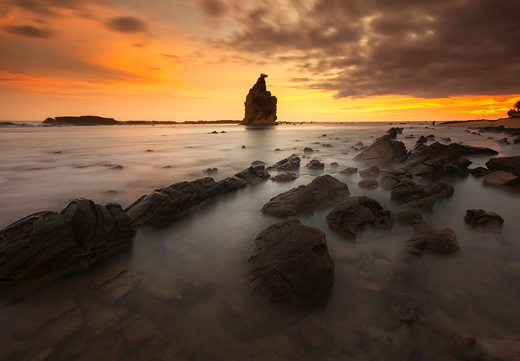
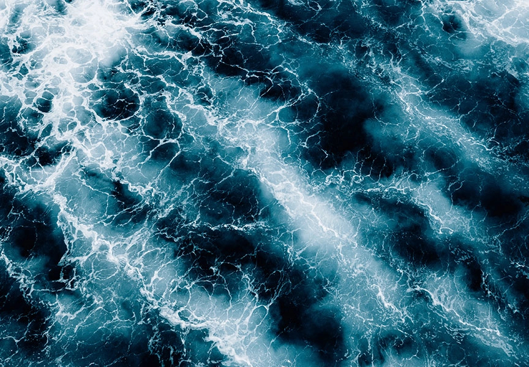
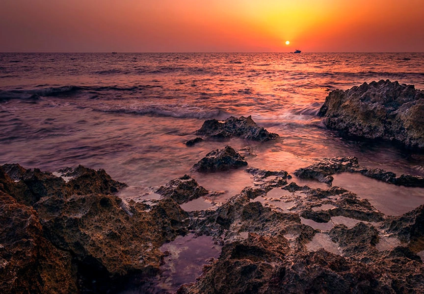
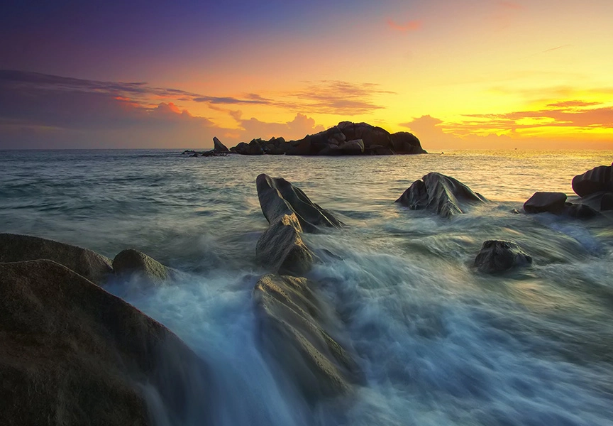

Have you ever seen those tranquil images of a waterfall or ocean waves where the water looks like silk? The whole image is in perfect focus, but the water is perfectly smooth. Done well, the effect is stunning and can create tranquil, ethereal images.
How is it done? It’s easier than you think!
Check out this guide to long-exposure water photography to learn everything you need to know to create your own silky water images.
Setting the scene
Location is important for long exposure water photography. As always, a strong composition will help create an impactful photo — you can’t use this technique just anywhere and expect stunning results.
To create the effect with the water, you need movement in the water. A still lake or pond won’t work. You need a waterfall or rolling ocean waves. A river will work too though you will usually need rocks or something breaking the surface of the water so you can see the movement.
Once you’ve chosen your location, here’s what you need to do with your camera.
Camera settings
Effects like this are impossible to capture in a camera’s automatic modes. To create this effect, you are purposefully blurring part of the photo, which is not what the automatic mode seeks to do.
If you haven’t ventured into manual mode yet, this is the perfect time. You’ll need full control over your camera settings to create this effect.
For this tutorial, let’s look at the basic settings you should use.
Shutter speed
A slow shutter speed is the key setting in long-exposure water photography. A lot of what we’ve already mentioned (tripod, touchless shutter, etc.) supports using a slow shutter speed.
The actual speed you use will depend on the brightness of the day and the look you’re going for. A longer shutter speed will create a smoother image.
It also depends on how fast the water is moving. Your shutter speed doesn’t have to be as slow to smoothly capture faster-moving water. But if the water is barely moving, a longer shutter speed is needed.
Typically you’ll need a shutter speed of at least a ½ second or longer. However, if you’re shooting in bright sunlight the image can easily get blown out.
Experiment a little with your image and try different shutter speeds. Just watch out for the undesirable middle ground. If your shutter speed is too fast, the water will look choppy blurry instead of smooth blurry. If this happens, try slowing down the shutter speed even more.
ISO
Your camera is sitting on a tripod and the slow shutter speed you’ll use generally lets in plenty of light. There is no reason to turn up your ISO and it can make it more difficult to get the lighting right in bright conditions.
Keep your ISO at 100 to help darken the photo and reduce grain.
Aperture
For a landscape image, you typically want the whole scene in focus. To do this, you need to close down your aperture. Remember, the aperture is represented by a fraction (f/5.6, f/8, f/16, etc). Thus, a bigger number on the bottom means a smaller aperture. So, f/16 is smaller than f/8, etc.
The smaller your aperture, the bigger your plane of focus. In other words, more of your scene will be in perfect focus.
Closing down the aperture also lets less light into the camera, which can help to compensate for the brightness due to a slow shutter speed.
You can try choosing your smallest aperture but remember lenses usually aren’t their sharpest when pushed to their extremes. Try a more conservative aperture and compensate with an ND filter, which we’ll talk more about in a minute.
Tripod
A tripod is essential when creating this type of image. You will be leaving the shutter open for an extended period of time to capture the movement of the water. The camera must stay completely still to get the rest of the scene in perfect focus.
If you are holding the camera in your hands, you will always end up with some motion blur. If you have a steady hand, it might be slight, but it will still be blurry. You can’t physically hold a camera still enough to avoid blurring other parts of the image.
Thus, set your camera firmly on a tripod to keep it completely stationary while taking the photo.
Taking the shoot
To get your focus locked in, use a single focus point. Most or all of your image will likely be in focus but you should still rest your focus point over the subject or most important element of the image.
Once you’ve locked focus, switch to manual focus. This will prevent the camera from refocusing when you press the shutter button.
If your lens or camera has image stabilization, be sure to turn it off. Your camera is sitting on a tripod so this feature isn’t necessary. Instead, it can interfere with the long exposure effect because it may try to compensate for the movement. Remember to use a remote, phone app, or the timer to click the shutter to avoid blur caused by camerashake
Successful long exposure water photography
Once you understand how to create the long exposure water photography effect, it’s easy to recreate in different locations. You might be surprised how simple great photography can be. At the same time, it can also be difficult.
It’s easy to follow the steps but the effect won’t be as magnificent if you don’t properly compose your scene. Obviously, in landscape photography, you can’t move your subject or other elements, but you can move.
Walk around, experiment with different angles, and don’t forget you can put your camera high or low — it doesn’t have to stay at eye height. Look for something unusual to create your own unique masterpiece!
Leave a comment